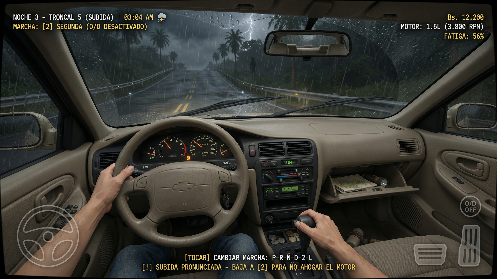
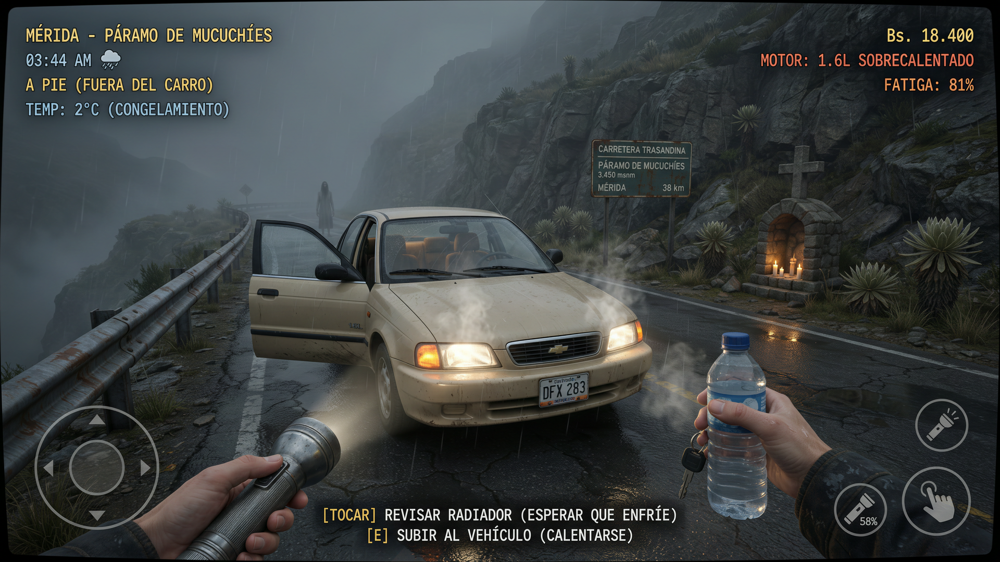
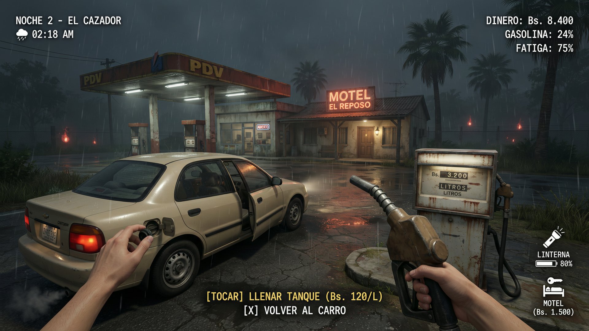
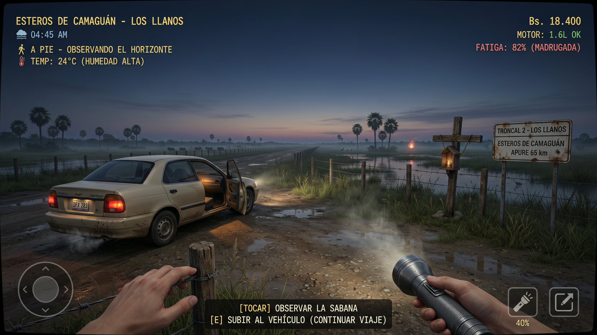
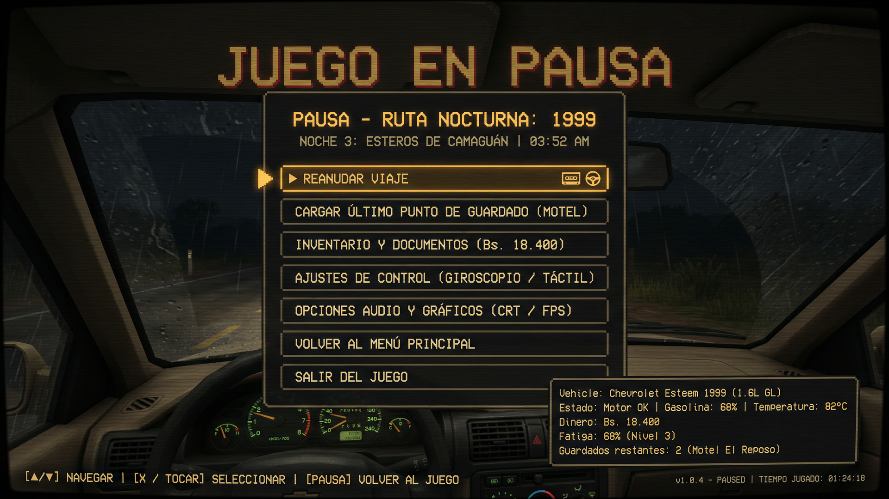
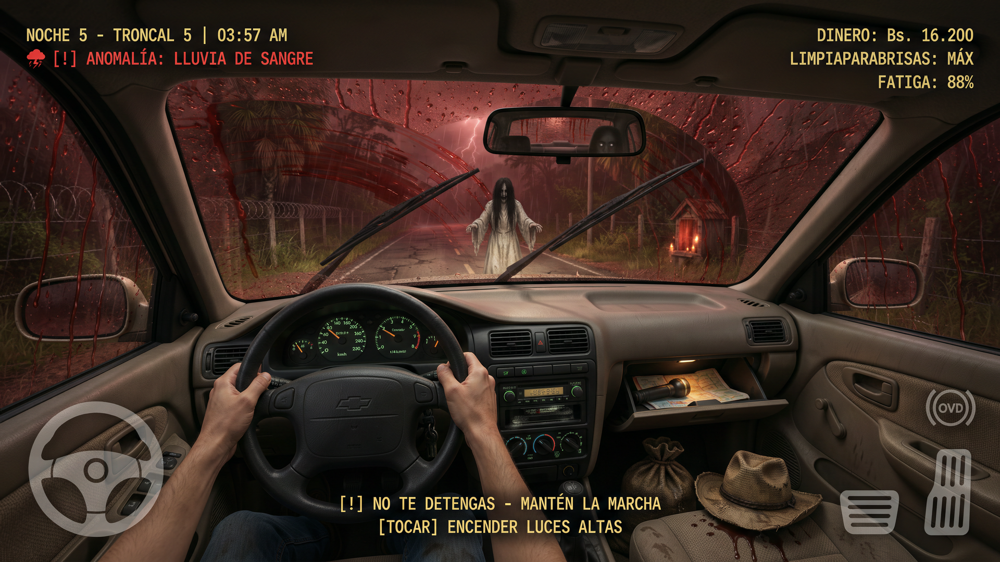

Un viaje nocturno a través de las carreteras más oscuras y desoladas de la Venezuela de 1999 a bordo de un sedán clásico de 1.6L. Desarrollado para exprimir al límite las APIs nativas de Android, pantallas de 120 a 240 Hz, audio espacial 3D y los SoCs más potentes del mercado.
Progreso en tiempo real de las 8 fases estructuradas del proyecto.
Estructura del proyecto, reglas maestras, especificaciones y portal web publicado en GitHub Pages con Web Audio API.
Godot 4.3 portable desplegado, configuración de Vulkan Mobile, enlace dual por ADB y prueba exitosa a 120 FPS.
Mecánica de preparación en el taller casero (aceite, agua, espejos, luces) e interactividad total del sedán beige.
Alternancia táctil 1ra/3ra persona, giroscopio de mirada libre, acelerómetro de inercia y sensor barométrico para altitud andina.
Diseño acústico binaural del motor 1.6L, radioemisoras con interferencia y doblaje neuronal en español venezolano con 9 idiomas.
Asfalto con troneras, ciclos de lluvia torrencial, tormentas eléctricas, nieve en Mérida y manifestaciones paranormales.
Sintonía de banda policial, entrega de documentos, extorsión con aviso a siguientes puestos, gandolas en vía y moteles para guardar partida.
Menús granulares de vídeo, optimización Snapdragon/MediaTek/Exynos/Unisoc/Amlogic, integración de monetización ética y APK instalable.
Un habitáculo 100% interactivo. Haz clic en los componentes para conocer su función técnica y mecánica de juego.

Tablero icónico noventero en tono beige con odómetro mecánico, velocímetro hasta 200 km/h, tacómetro hasta 8.000 RPM, medidor de temperatura de aguja y luz de Check Engine que titila cuando la presión barométrica desciende en los Andes.
La aguja de temperatura debe vigilarse al subir cuestas pronunciadas. Si pasa de 95°C, el ventilador del radiador se forzará al máximo y habrá que detenerse a pie a echar agua.
Escucha las transmisiones de la época o sintoniza la banda corta de las alcabalas para saber si están matraqueando.
Entidades ancestrales documentadas en la Colección Bicentenario y crónicas populares de carretera.
Gigante famélico que carga un saco con los huesos de su padre. Vaga en las noches tormentosas emitiendo su melodía en escala ascendente.
Espectro de mujer vestida de blanco que se aparece pidiendo auxilio en orillas solitarias a conductores de madrugada.
Alma en pena que deambula entre Chachopo y Apartaderos buscando a sus hijos perdidos en medio de la neblina helada y los frailejones.
Carruaje envuelto en llamas arrastrado por caballos espectrales que cruza la autopista a medianoche anunciando muerte y desastre.
Figura con ropajes coloniales y rostro afable que pide fuego o una colmena de fósforos a conductores en paradas solitarias.
Capillas de piedra y cruces de madera erigidas donde ocurrieron accidentes fatales. Velas que nunca se apagan en el barro.
Configuración nativa para exprimir cada arquitectura de silicio desde teléfonos económicos hasta Galaxy S25 Ultra y Android TVs.
| FABRICANTE / SOC | GPU & ARQUITECTURA | PERFIL DE RENDERIZADO | TECNOLOGÍAS DE REESCALADO / APIS |
|---|---|---|---|
| Qualcomm Snapdragon (8 Gen 2 / 8 Elite) | Adreno 740 / Adreno 830 | Ultra / Vulkan Forward+ (120-240 FPS) | Snapdragon Game Super Resolution (GSR), Game Mode API, sombreado PBR completo. |
| MediaTek Dimensity (9200 / 9400 / 8300) | ARM Immortalis-G720 / G925 | Alto / Vulkan Mobile (90-120 FPS) | MediaTek HyperEngine, compresión de texturas ASTC 4x4, sombreadores de baja latencia. |
| MediaTek Helio (G99 / G96 / G88 / G85 / P70) | Mali-G52 / Mali-G57 MC2 | Equilibrado / Eficiente (45-60 FPS) | Resolución dinámica 720p/1080p inteligente, perfil de partículas optimizado, sombreado liviano. |
| Unisoc Tiger ("Tigre") (T606 / T612 / T616 / T618 / T820) | Mali-G57 / Mali-G52 | Eficiente / Fluido (30-60 FPS) | LODs agresivos en vegetación, cubemaps estáticos en retrovisores y optimización de RAM. |
| Samsung Exynos (850 / 1380 / 2200 / 2400) | AMD RDNA (Xclipse 920/940) & Mali | Escalable según modelo (45 a 120 FPS) | Optimizaciones térmicas adaptativas, FSR integrado, oclusión ambiental SSAO en gamas altas. |
| Snapdragon Gamas 4 y 6 (4 Gen 2 / 680 / 685 / 695) | Adreno 610 / 619 | Equilibrado (45-60 FPS) | Vulkan Mobile con reducción de shaders pesados y física sincronizada a 60 ticks. |
| Amlogic (Smart TVs 32" a 80") | Mali-G31 / G52 MP2 | TV Leanback / 1080p escalado (60 FPS) | Soporte completo de D-Pad / Control Remoto, interfaz a 10 pies de distancia, mandos Bluetooth. |
Capturas de diseño conceptual que definen la dirección artística de Ruta 1999.




